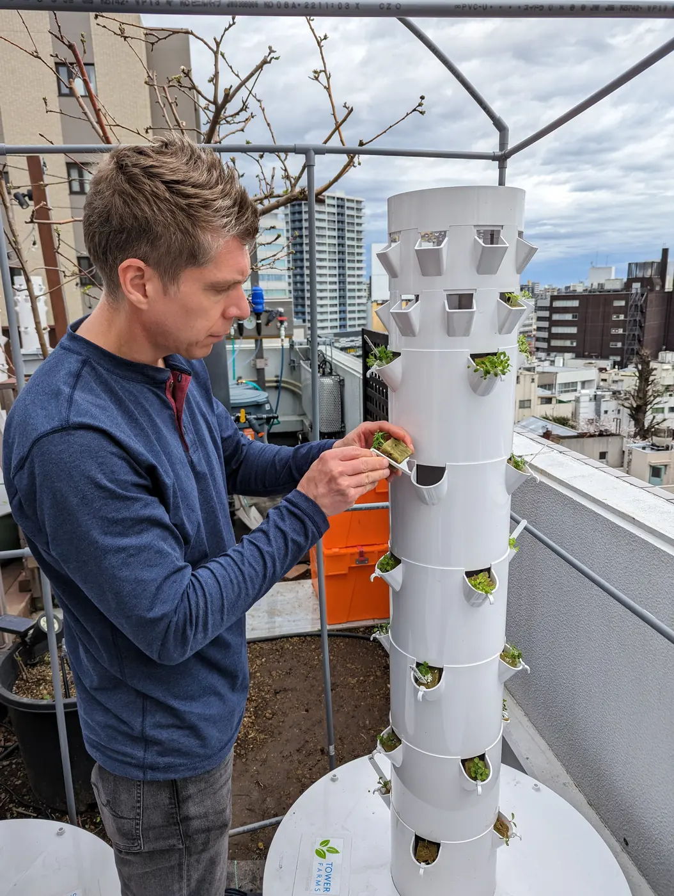

ミッション
Greentopiaは、都市農業をもっと身近に、学びのあるものに、そして地域とともに育むものにするために活動しています。新鮮な食べ物は食べる場所の近くで育てるべきであり、子どもたちは実際に手を動かすことで最もよく学び、共有スペースに置かれた一台のタワーファームが、食やサステナビリティ、そして人と人とのつながりについての考え方を変えられる——私たちはそう信じています。
創業者のストーリー
Richard Mayusは、東京を拠点とする教育者・起業家です。MITで数学と金融を学び、金融業界でキャリアを積んだ後、食へのアクセス、サステナビリティ、教育といった課題に取り組む手段として都市農業に目を向けました。その考え方を東京の学校、家庭、共有スペースに届けるためにGreentopiaを創業。自宅で手作りした水耕栽培システムから始まった取り組みは、今では教育プログラム、地域での設置、企業・団体とのパートナーシップへと広がっています。共同講師のBrian Lunnとともにプログラムの設計と指導を担い、毎週、生徒や先生、パートナーと直接向き合っています。
チーム
- Richard Mayus — 創業者・リードエデュケーター
- Emiko Hirayama — コミュニティマネージャー
- Brian Lunn — 共同リードエデュケーター
- Nick Starrett — エデュケーター・ファーム管理
- Matt Peterson — エデュケーター・コラボレーター
学校とパートナー
セント・メリーズ・インターナショナル・スクール、清泉インターナショナル学園、聖心インターナショナルスクール、ブリティッシュ・スクール・イン・東京、United School of Tokyo、東京インターナショナルスクール、Phoenix House Internationalなど、東京の数多くのインターナショナルスクールと協働してきました。また、コワーキングスペース、地域団体、地元企業とも連携しています。
保護者の声
- 「子どもたちが夕食の時間に水耕栽培の話をするようになりました。」
- 「娘がサラダを全部食べて、おかわりまでするんです！」
- 「まさか息子たちがケールを取り合う日が来るとは思いませんでした。」
- 「娘がGreen STEM ClubのDIY作品を持ち帰ったときは正直半信半疑でしたが、4か月たった今もそこから新鮮なバジルが採れています。驚きです。」
よくある質問
どのようなプログラムがありますか？
学校の理科単元に組み込むカリキュラム連携プログラム、提携校での放課後クラブ（プレK・キンダー向けGreen Explorers、K〜4年生向けGreen STEM Club、上級生向けGreen STEM Studio）、J's International Schoolで開催する自社の放課後プログラムGreentopia Labs、季節ごとのキャンプ、そしてご家族・地域・企業チーム向けのワークショップをご用意しています。
対象年齢は？
多くのプログラムはプレKから6年生までが対象です。13年生（高校3年生相当）までの生徒向けの内容も設計しており、全年齢対象のファミリーワークショップも行っています。
経験は必要ですか？
まったく必要ありません。すべてのプログラムは基礎から始めます。リピーターの生徒は、より高度な実験や自主プロジェクトに取り組みます。
学校のカリキュラムに合わせられますか？
はい、それが私たちの基本的な進め方です。プログラム開始前にカリキュラムコーディネーターの方と打ち合わせを行い、IPC、NGSS、FOSSなど、既存の単元に合わせて内容を組み立てます。
生徒は何を持ち帰りますか？
プログラムによって、収穫したての野菜、マイクログリーンの栽培キット、自分で作った小さなDIY水耕栽培システムなどを持ち帰ります。
水耕栽培とは？
土を使わず、栄養を含んだ水で植物を育てる栽培方法です。植物はネットポットや培地で育ち、根から水・養分・酸素を直接吸収します。従来の農業より大幅に少ない水で済み、屋内でも屋外でも一年中栽培できます。
何が育てられますか？
葉物野菜（各種レタス、ケール、チャード、ほうれん草、水菜）、ハーブ（バジル、ミント、ディル、大葉、パクチー）、エディブルフラワー、いちご、トマト、きゅうり、ピーマンなど。葉物野菜とハーブは成長が早く、最初に育てるのに最適です。栽培できる品種の一覧はこちら。
水耕栽培の野菜は安全に食べられますか？
はい。システムは食品グレード・BPAフリーで、農薬は使用していません。厳格な食品衛生ルールに従っています。土に触れることがなく、食べる直前に収穫するため、一般的な市販の野菜よりも清潔です。
水はどのくらい使いますか？
水耕栽培システムは、従来の土耕栽培に比べて最大90%少ない水で栽培できます。水は閉鎖型のシステム内を循環するため、失われるのは植物が吸収する分と蒸発する分だけです。
日光は必要ですか？
屋外では自然光で十分に育ちます。屋内では、植物の成長に適した波長のフルスペクトルLED育成ライトを使用します。自然光がまったく入らない部屋でも、タワーはしっかり育ちます。
自宅用にタワーをリースできますか？
はい。最初の3か月はお試し期間として月額¥13,000、その後は月額¥11,000からご利用いただけます。配送・設置から使い方のご説明まで、すべてお任せください。リース終了時には、更新または返却をお選びいただけます。
オフィスや共有スペースにも設置できますか？
はい。コワーキングスペース、オフィス、集合住宅、コミュニティセンターなどに設置しています。どのプロジェクトも、無料の現地調査から始まります。
メンテナンス契約には何が含まれますか？
定期訪問（ご要望に応じて毎週〜毎月）で、植物の状態確認、養分の補充、作物の植え替え、部品の清掃、トラブル対応を行います。訪問の合間も、タワーは自動で稼働します。
コンサルティングは行っていますか？
はい。水耕栽培システムの設計、都市農業の戦略、食育プログラムの開発、サステナビリティ計画についてご相談を承ります。機器の導入を決める前に専門的なアドバイスが欲しい、という段階からお手伝いできます。
私たちのグループ向けにワークショップを開いてもらえますか？
はい。ご家族、企業チーム、地域団体、学校行事向けのプライベートワークショップを行っています。人数と目的をお知らせいただければ、最適な形式をご提案します。
植物がしおれてきました。どうすればいいですか？
まずタンクの水位を確認してください。ポンプが動いていても水位が低いと、根に十分な水が届いていない可能性があります。養液を補充し、数時間後にもう一度確認してください。タンクが満水の場合は、ポンプが動いているか確認しましょう。静かな作動音がして、水が流れていれば正常です。
葉が黄色くなってきました。何か問題がありますか？
葉の黄変は、多くの場合養分の問題です。A液とB液の両方を入れているか、pHが5.5〜6.5の範囲にあるかを確認してください。pHが高すぎたり低すぎたりすると、水に養分が含まれていても吸収できません。
小さな虫がついています。どうすればいいですか？
根元付近を飛ぶ小さな虫は、湿った環境を好むキノコバエであることが多いです。給水サイクルの合間に培地を少し乾かしてください。葉についたアブラムシなどの害虫は、水を優しく吹きかけるか、薄めたニームオイルを散布すれば、たいてい解決します。改善しない場合はご連絡ください。
ポンプが動きません。何を確認すればいいですか？
タイマーの設定と電源の接続を確認してください。タイマーがオンなのにポンプが動かない場合は、吸水口が詰まっていないか確認します。ポンプのプラグを抜いてタンクから取り出し、ゴミを取り除いてから再接続してください。それでも動かない場合は、交換いたしますのでご連絡ください。
水はどのくらいの頻度で交換すればいいですか？
2〜3週間ごとの全量交換をおすすめします。交換の合間は、水位が下がったら新しい養液を補充するだけで大丈夫です。全量交換することで養分の塩類の蓄積を防ぎ、システムを清潔に保てます。
苗はどうやって注文しますか？
オンラインの苗注文フォームからご注文ください。レタス、ハーブ、葉物野菜、エディブルフラワー、野菜など、その時期のラインナップからお選びいただけます。タワーにすぐ植え付けられる状態の苗をお届けします。
苗の価格は？
品種により、ロックウールキューブ1個（植え付けポート1か所分）につき¥200〜300です。1つのキューブには通常2〜4株が入っています。必要な数だけ、いつでもご注文いただけます。
自分で用意した種から育てられますか？
はい。ロックウールキューブなどの培地で発芽させ、根が育ったらタワーに植え替えてください。スターターキットには発芽ガイドが付いています。コツについてもお気軽にお尋ねください。
初心者におすすめの作物は？
レタス類（バターヘッド、ロメイン、サニーレタス）や、バジル・ミントなどのハーブが最も始めやすいです。発芽も成長も早く、育てやすいのが特徴です。慣れてきたら、ケール、チャード、大葉、エディブルフラワーにも挑戦してみてください。
収穫までどのくらいかかりますか？
ほとんどの葉物野菜は、苗をタワーに植えてから4〜6週間で収穫できます。ハーブはもう少しかかります。外側の葉から必要な分だけ摘み取れば、その後も何週間も収穫を続けられます。